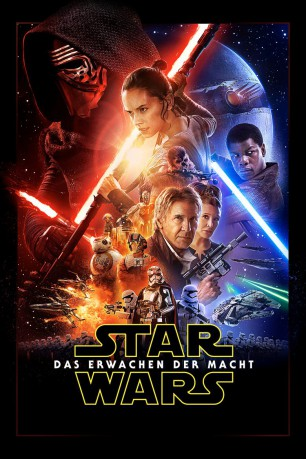

Auszeichnungen: für 5 Oscars nominiert 1 BAFTA-Awards gewonnen
 gesehen am 08.04.2016
gesehen am 08.04.2016Alternativ: Star Wars: Episode VII - The Force Awakens
Auszeichnungen: für 5 Oscars nominiert 1 BAFTA-Awards gewonnen gesehen am 08.04.2016
 
 IMDB-Wertung: 8.2 / 10
IMDB-Wertung: 8.2 / 10  Metascore:
Metascore: 
Über 30 Jahre sind vergangen, seitdem die Rebellen den zweiten Todesstern über Endor zerstört und damit die entscheidende Schlacht gegen die finsteren Mächte des Imperiums gewonnen haben. Doch aus der Asche des Bösen ist die First Order empor gestiegen und hat die Herrschaft wieder an sich gerissen. Während Supreme Leader Snoke (Andy Serkis) die Zügel im Hintergrund in den Händen hält, schickt er den Lichtschwert schwingenden Kylo Ren (Adam Driver) ins Feld, um die neue Weltordnung auch in den verstecktesten Winkeln der Galaxis zu verbreiten.
Jahr: 2015
Dauer: 138 Minuten
FSK: 12
Land: USA Studio: Walt Disney Studios Motion PicturesTonspuren:
Untertitel: Deutsch,
Auflösung: 1080p (1920x1080) Größe: 35532 MB
Genre: Action, Sci-Fi, Abenteuer, Fantasy
Regisseur: J.J. Abrams
Drehbuch: Luke Davies
Soundtrack:
Darsteller:
 Harrison Ford als Han Solo
Harrison Ford als Han Solo Mark Hamill als Luke Skywalker
Mark Hamill als Luke Skywalker Carrie Fisher als Princess Leia
Carrie Fisher als Princess Leia Adam Driver als Kylo Ren
Adam Driver als Kylo Ren Daisy Ridley als Rey
Daisy Ridley als Rey John Boyega als Finn
John Boyega als Finn Oscar Isaac als Poe Dameron
Oscar Isaac als Poe Dameron Lupita Nyong'o als Maz Kanata
Lupita Nyong'o als Maz Kanata Andy Serkis als Supreme Leader Snoke
Andy Serkis als Supreme Leader Snoke Domhnall Gleeson als General Hux
Domhnall Gleeson als General Hux Anthony Daniels als C-3PO
Anthony Daniels als C-3PO Max von Sydow als Lor San Tekka
Max von Sydow als Lor San Tekka Peter Mayhew als Chewbacca
Peter Mayhew als Chewbacca Gwendoline Christie als Captain Phasma
Gwendoline Christie als Captain Phasma Simon Pegg als Unkar Plutt
Simon Pegg als Unkar Plutt Kiran Shah als Teedo
Kiran Shah als Teedo Pip Torrens als Colonel Kaplan
Pip Torrens als Colonel Kaplan Greg Grunberg als Snap Wexley
Greg Grunberg als Snap Wexley Emun Elliott als Brance
Emun Elliott als Brance Yayan Ruhian als Tasu Leech
Yayan Ruhian als Tasu Leech Sebastian Armesto als Lieutenant Mitaka
Sebastian Armesto als Lieutenant Mitaka Warwick Davis als Wollivan
Warwick Davis als Wollivan Mark Stanley als Knight of Ren
Mark Stanley als Knight of Ren Ken Leung als Admiral Statura
Ken Leung als Admiral Statura Iko Uwais als Razoo Quin-Fee
Iko Uwais als Razoo Quin-Fee Harriet Walter als Dr. Kalonia
Harriet Walter als Dr. Kalonia Tim Rose als Admiral Ackbar
Tim Rose als Admiral Ackbar Erik Bauersfeld als Admiral Ackbar
Erik Bauersfeld als Admiral Ackbar Mike Quinn als Nien Nunb
Mike Quinn als Nien Nunb Michael Giacchino als FN-3181
Michael Giacchino als FN-3181 Judah Friedlander als Bar Patron
Judah Friedlander als Bar Patron Victor McGuire als Bar Patron
Victor McGuire als Bar Patron Miltos Yerolemou als Bar Patron
Miltos Yerolemou als Bar Patron Billie Lourd als Lieutenant Connix
Billie Lourd als Lieutenant Connix Leanne Best als Min Sakul
Leanne Best als Min Sakul Crystal Clarke als Ensign Goode
Crystal Clarke als Ensign Goode Jeffery Kissoon als Rear Admiral Guich
Jeffery Kissoon als Rear Admiral Guich Jessica Henwick als Jess Testor
Jessica Henwick als Jess TestorDatei: X:\7+mehr(A-Z)\Star Wars\Star Wars Episode 7 - Das Erwachen der Macht (2015, FSK12, 1920x1080).mkv seit 07.04.2016
Festplatte: HD Collection-7+mehr(A-Z)+Person
 Es gibt insgesamt 18 Filme in der Gruppe '7+mehr(A-Z)\Star Wars'
Es gibt insgesamt 18 Filme in der Gruppe '7+mehr(A-Z)\Star Wars'